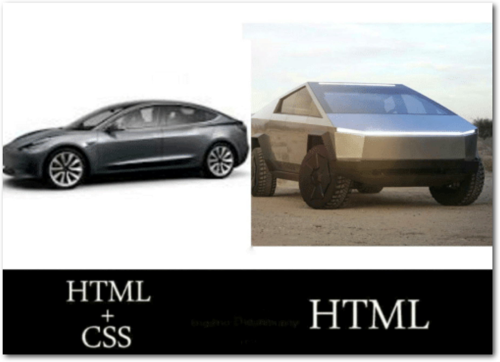
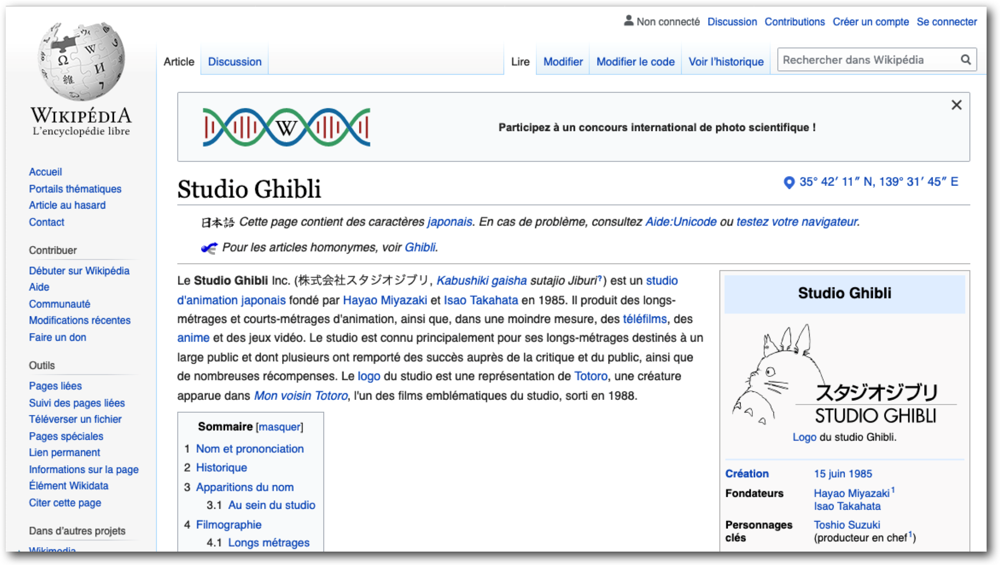
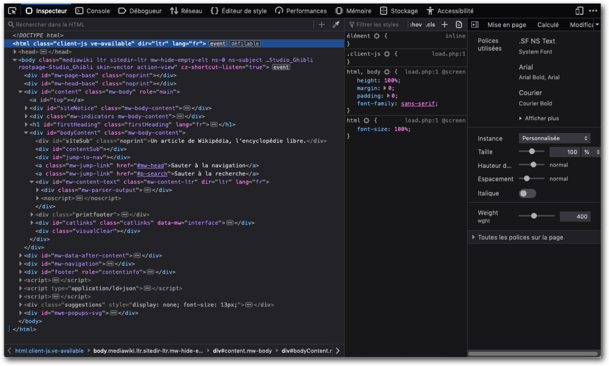
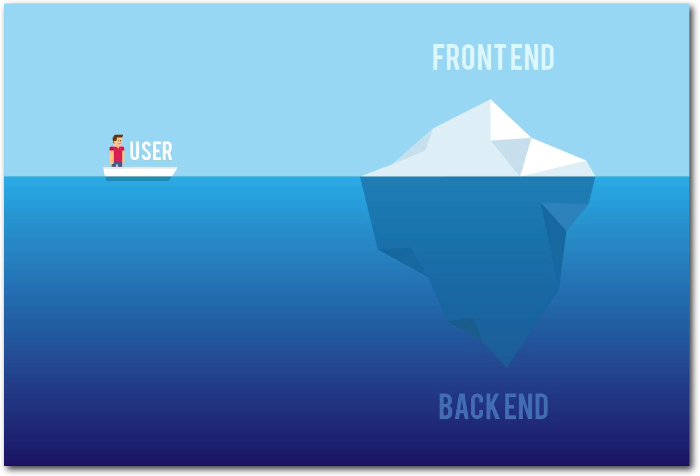
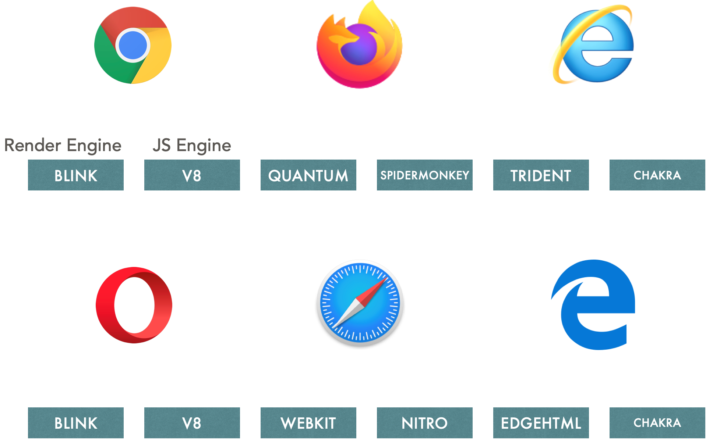

Le langage HTML
HTML signifie HyperText Markup Language.
Il s’agit d’un langage de balisage permettant de créer des pages web.
HTML va nous permettre de gérer et organiser le contenu de nos pages web (Ex : Sur ma page d’accueil je souhaite intégrer du texte, des liens, des images, des vidéos etc..)
Le langage CSS (permettant de gérer l’apparence des pages web), ne verra le jour qu’en 1996, de fait on se servait d’HTML pour gérer à la fois le contenu ET l’apparence de nos pages web.
 Tim Berners Lee (un des pères du langage HTML), popularise une première version d’HTML en 1991.
Tim Berners Lee (un des pères du langage HTML), popularise une première version d’HTML en 1991.
Au fil du temps, les sites web se sont perfectionnés et les pages HTML sont devenus de plus en plus complexes, ce qui requiert l’utilisation de plus de balises gérant le fond ET la forme des pages web.
La mise à jour, la maintenance des pages, était donc plus difficile.
- HTML1 : Version créée par Tim Berners (1991)
- HTML2 : Version qui va définir les bases du langage (W3C) (94-96)
- HTML3 : + tableau, position texte, script etc… (1996)
- HTML4 : + frames, tableaux complexe, amélioration formulaires, feuilles de style (1998 - 2000)
- HTML5 : Dernière version, intégration video, agencement du contenu, amélioration des formulaires, animation…
 Exemple d’une structure basque de site web, Html5 apporte des balises dédiées.
Exemple d’une structure basque de site web, Html5 apporte des balises dédiées.

Html sera le langage dédié à la structure des pages web, Css sera le langage dédié à la présentation, la mise en forme.

Exemple d’une page Html

Code source d’une page Html

Dans le monde du web on peut distinguer 2 concepts
Le front End désigne ce que l’utilisateur peut voir lorsqu’il consulte une page web.
Les données de cette page web sont gérées par la partie backEnd.
Schéma d’une requête http pour accéder à une page web.
- Le côté client (ou utilisateur) tape une adresse dans son navigateur
- Cela envoi une requête appelée GET à un server (ici celui de mozilla.org) parce que l’on veut afficher le contenu de mozzilla.org
- Mais que demandons-nous? Pour afficher un site Web, le navigateur doit récupérer le code HTML (qui fait partie d'un fichier .html). Sans HTML, aucun site Web ne fonctionnerait car ce fichier définit le contenu et la structure de notre site Web, ce qui signifie que l'obtention de HTML est un must.
- Le navigateur demande donc un fichier .html et si notre demande a abouti, nous récupérons un fichier .html en réponse. Ce fichier est appelé index.html dans la plupart des cas, Avec cette réponse, nous sommes en mesure d'afficher un site Web
Schéma alternatif d’une requête http pour accéder à une page web.
- Les Navigateurs
- Programme permettant de visualiser les sites web.
- Ils permettent de Lire et interpréter le code HTML et CSS pour afficher un visuel.

Liste des principaux navigateur avec leurs moteurs.